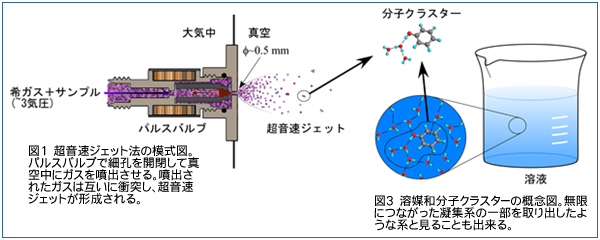
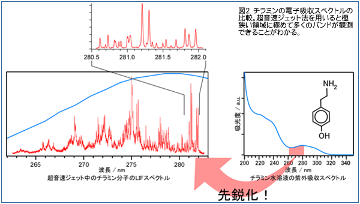

Our laboratory develops various dual wavelength spectroscopy using two or more lasers at the same time and aims at detailed elucidation of structures and reactive element processes of supersonic jet cooled molecules and solvated clusters. The supersonic jet method is a method of obtaining an extremely low temperature of 10 K or less by ejecting a high pressure rare gas and a sample from a pore of about 0.5 to 1 mm into a vacuum (Fig. 1).

Moreover, in supersonic jet method, each molecule becomes isolated state without becoming solid even at such extremely low temperature. Therefore, in practice, molecules that exist only in a state surrounded by a myriad of molecules can be placed in a state in which one molecule as depicted by so-called molecular formula exists alone. In addition, since the temperature is extremely low, it is possible to limit the influence by heat to the limit. Therefore, it is possible to measure properties unique to one molecule in an ideal environment. As an example, Fig. 2 shows the ultraviolet absorption spectrum of tyramine molecule.

When measured in solution, only a smooth spectrum can be obtained due to the temperature and the solvent molecules around it, but you can see that infinitely many complex absorptions appear when measured in a supersonic jet. By analyzing these absorption, it becomes possible to obtain detailed information on the molecule.
In addition, a supersonic jet creates a molecular aggregate called cluster in which several molecules aggregate (Fig. 3). Clusters can control the number of constituent molecules, and it is an interesting system that can observe how molecules are gathered to a certain molecule while increasing the number of molecules one by one. Clusters are considered to be solute molecules and only a fixed number of solvent molecules gathered in the gas phase and can be regarded as a so-called nanoscale solution, which is a part of solution / aggregation phase. In addition, since the influence by the change in the number of solvent molecules appears greatly, cluster-specific properties may appear. Since solvated clusters are closed in the system and molecular orientation is fixed, it is the ideal environment for studying the reactive element process.
However, solvated clusters can only occur so far at supersonic molecular beams. Due to the extremely sparse concentration of molecules and clusters in supersonic jets, it is almost impossible to measure ordinary infrared absorption spectra.
Infrared absorption light is one of the effective methods to investigate the structure and reaction of clusters. Infrared absorption appears by vibrating chemical bonds of molecules, and it is compared to "fingerprints of molecules" because it sharply reflects the structure and environment of the molecule. Therefore, if we can capture changes in the infrared spectrum during the reaction every moment, it will be a powerful tool to elucidate the reaction process.